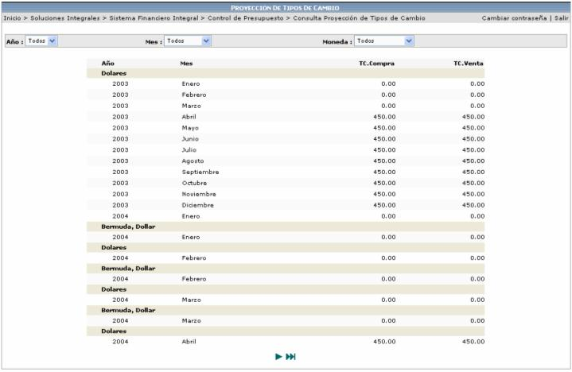

En la siguiente pantalla se puede consultar los tipos de cambio proyectados por año y mes de presupuesto además de la moneda, en esta consulta se despliega la información del tipo de cambio de compra y el de venta:
